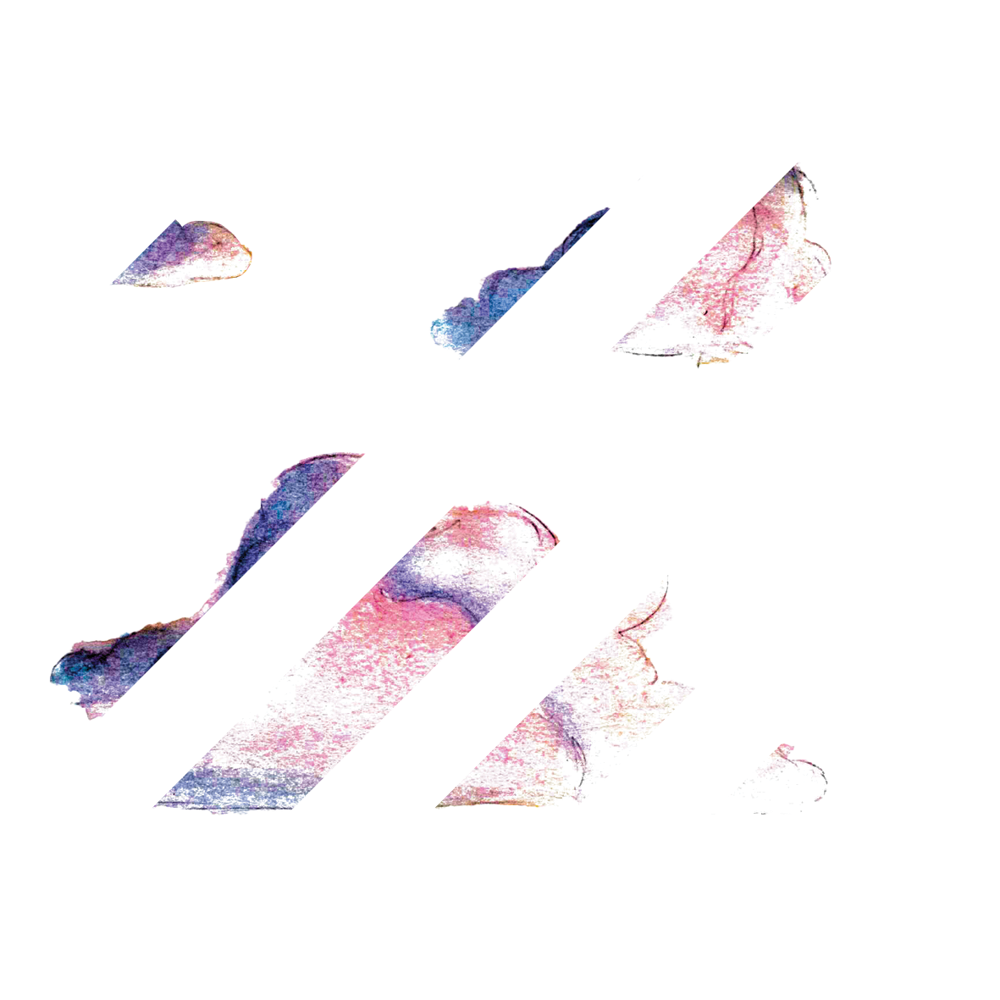
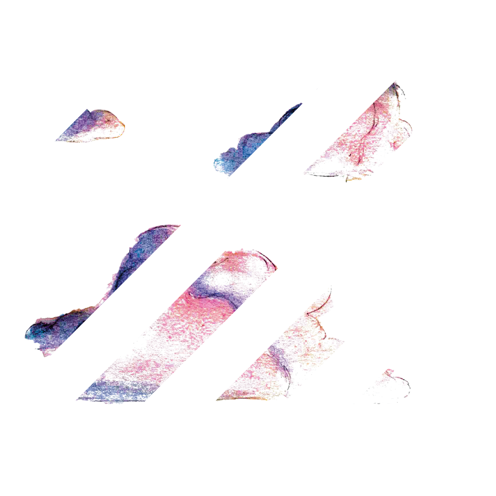

A partir d momento em que pensamentos destes o começavam
a torturar, será que não iria ser assim para sempre?
Não iriam agora ser cada vez mais intensos? Não seriam ameaçadores
para a sua existência? E o empresário acreditou mesmo
ver, no sono aparentemente sossegado e sem choro,
as primeiras rugas a aparecerem na testa lisa e infantil do.
 



 
